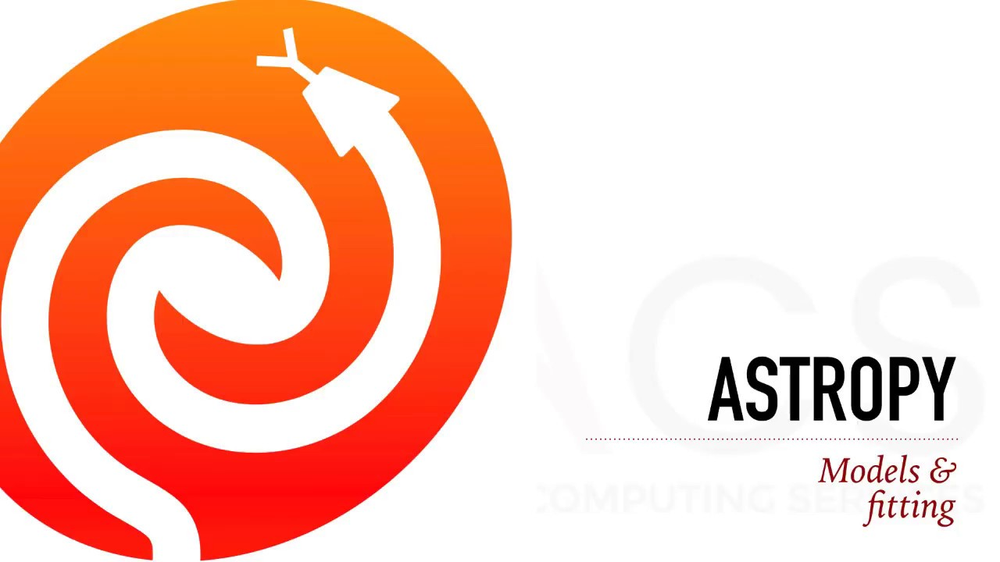
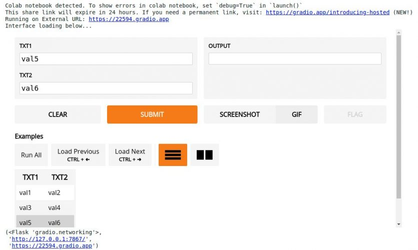
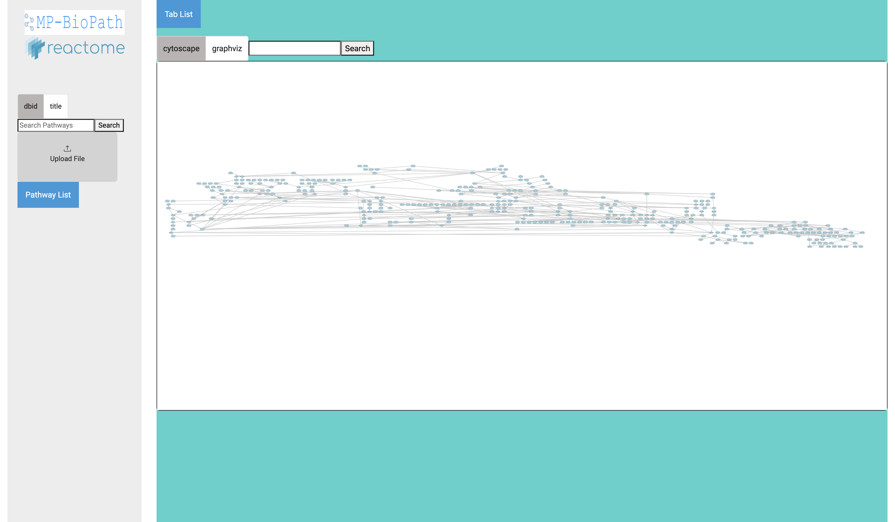
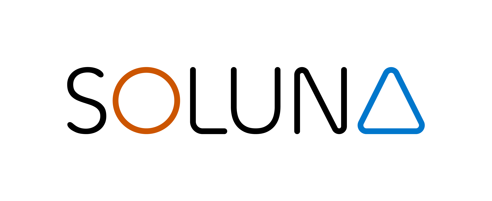
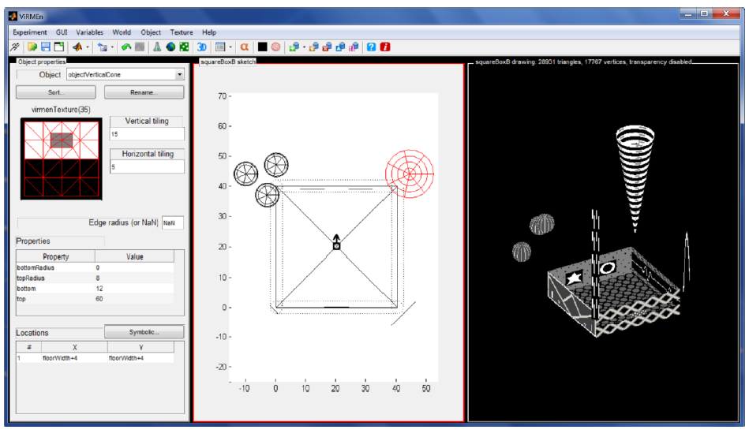

Projects
GPT-based Documentation Search Tool for Astropy

Pioneering the development of a GPT-based documentation search tool for the Astropy package at NCSA. This tool significantly improved documentation retrieval accuracy and incorporated a Retrieval Augmented Generation (RAG) model for comprehensive information delivery.
Customer Interaction Enhancement through Machine Learning

At Mr. Cooper, I enhanced customer interaction by developing prompt engineering models that delivered empathetic responses, preferred by 97% of customers. I also constructed an automatic testing pipeline and applied fine-tuning techniques to GPT3.5.
Interactive Web Application for Biological Pathway Visualization

As a Google Summer of Code Collaborator, I created an interactive Angular web application for visualizing biological pathways, using Cytoscape and D3 to display the results of the MP-Biopath Algorithm.
Data-Collection Pipeline and Dashboard for Soluna Computing

During my internship at Soluna Computing, I designed and implemented a data-collection pipeline using a RESTful API. Additionally, I created an explanatory dashboard in Tableau to display live data, and performed data analytics to extract performance insights and predict future outcomes.
VR Software Development for Neuroscience Lab

In a neuroscience lab, I developed software for VR experiments, which included setting up both physical and virtual environments. My work involved designing various virtual worlds, programming the logic using Teensy and MATLAB, and analyzing the data collected from these experiments. This project was pivotal in advancing VR applications in neuroscience research.